SAMMYVERSE
But what is Sammyverse?
Sammyverse is a universe where my friend's original characters exist, the name coming from the main character Sammy. It's focused on Sammy and 2 of his friends, Robin and Monster (fire)
This page was not necesserily made to promote a frined's work, but made for the same reason any other shrine is made; I LOVE THEM
Origin
Note: the real-life people you need to keep in mind for this section are 1. The person who made Sammyverse, Ratman (they/them) 2. My wife, Sam (??)
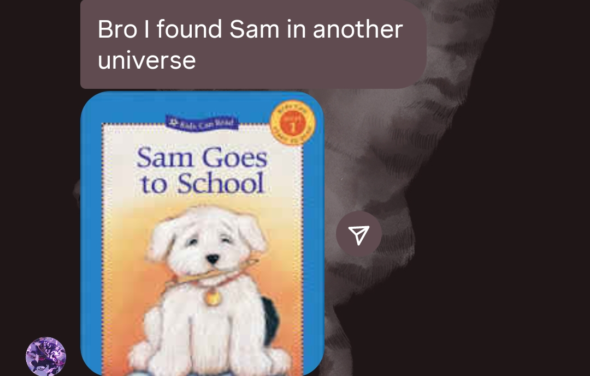
Ratman has just found a c.ai bot called "sam pup" (or something like that) who was, according to Ratman since I never saw him,a human-dog but not in a furry way. Interested to find the original artist of sam pup's profile picutre, the loser failed and instead found a book* with a cute puppy on it and has the same name as my wife. Immediately it was sent to the groupchat (which consists of my wife and I), and it sort of became something we talk about often. *"Sam Goes to School" book by Mary Labatt. A personal collection of all PDFs I could find is available here
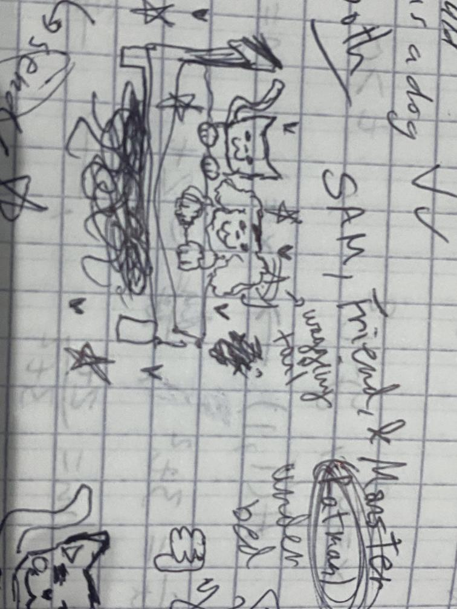
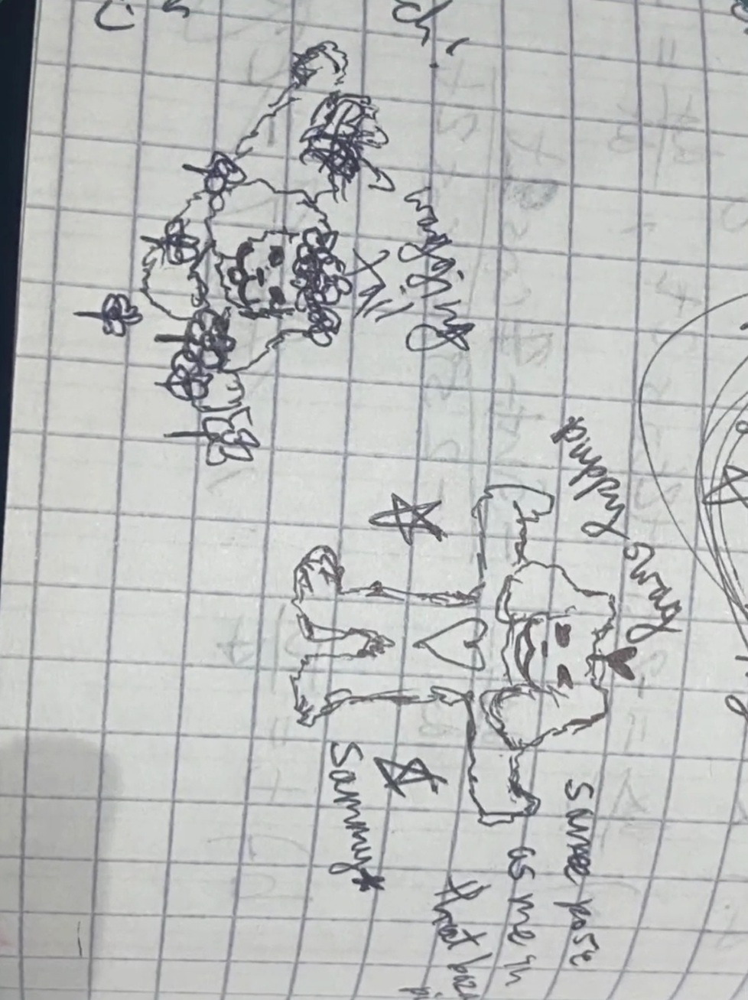
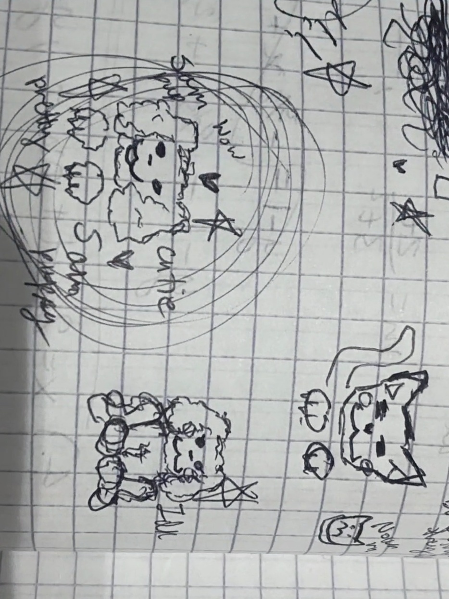
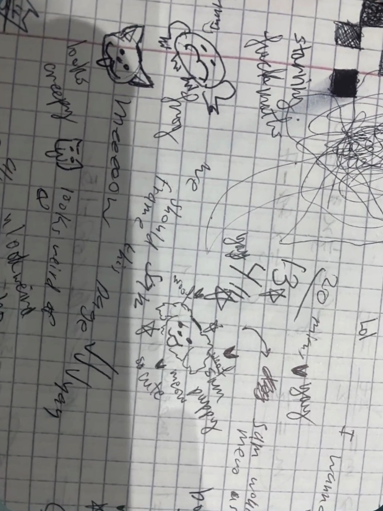
^This Sam the dog was then doodled in class in Ratman's notebook, eventually having full proper drawings and being renamed to Sammy to avoid confusion between him and our Sam.
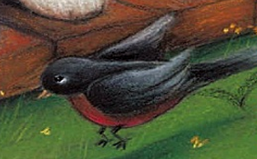
Our second sammyverse character was inspired by the first Sam the dog book we found "A Friend for Sam", which was about Sam the dog getting rejected by all sorts of animals until he eventually befriends a human child. In page 8 (which is identical to the book's cover) Sam meets a bird who runs away from him, an event so tragic that an OC was created - a friend of Sammy, getting named after type of the bird shown in the book, Robin.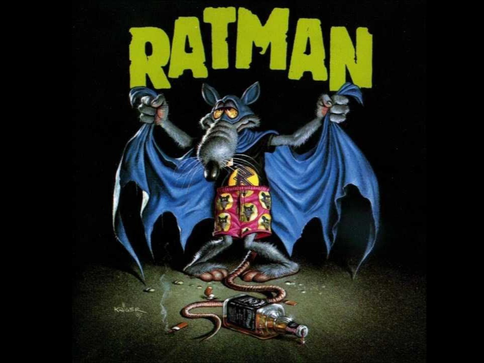
The last piece of context you need, if you couldn't already tell by the nickname used, is that at the time Ratman was obsessed with being RATMAN (a man who lives in the woods and is a rat). So obsessed that the third character's placeholder name was Ratman. I was completely unaware it was just a placeholder guy and that it will be changed TT While Ratman (the character) was still in the story, Ratman (the real life person) found an inspiration for the last remaining character: "Sam Finds a Monster" is a book where Sam thinks there's a monster in the house, which turns out to be a trashcan. And from there we got the final character Monster, RIP Ratman you will be missed.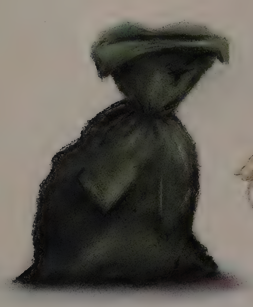
1st drawings of the trio:
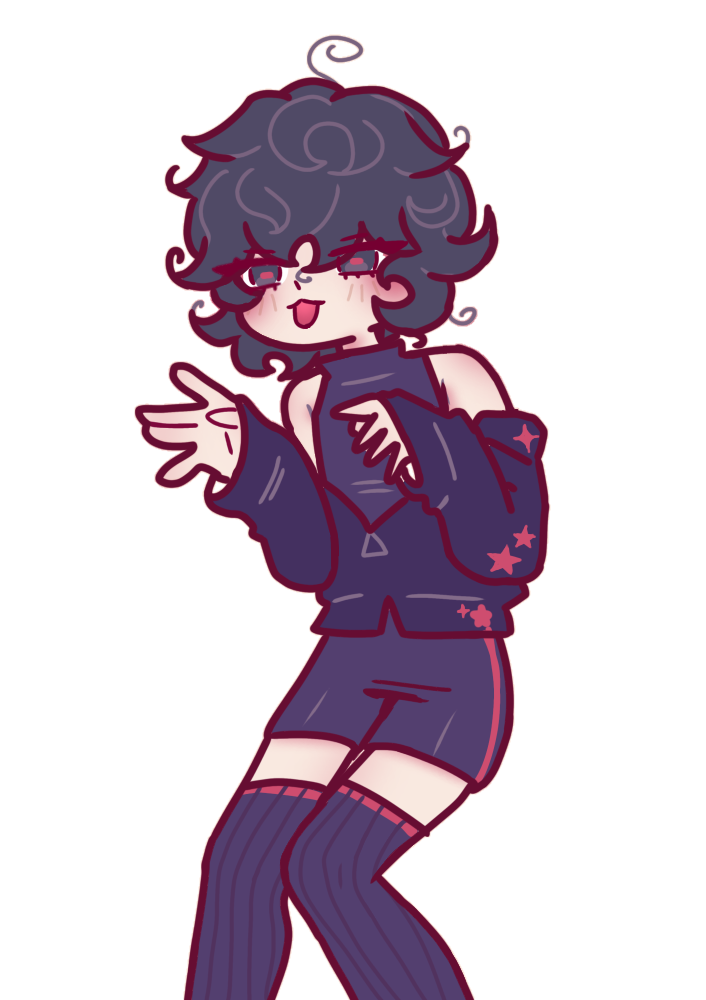
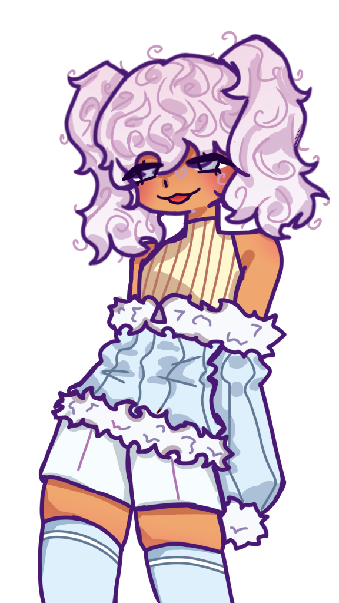
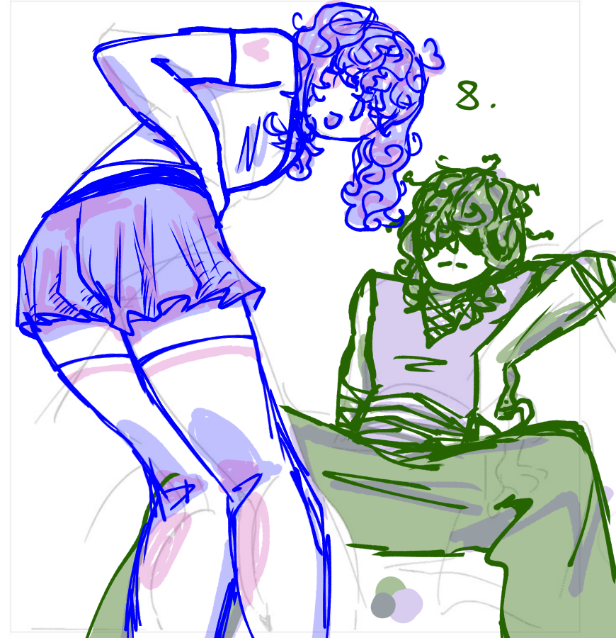
RobinSammyMonsterCharacters
Robin (he/they)
- About robin:
- (Appearance, personality)
- Lore and stuff:
- (Early life, toxic friendgroup and relationship??)
- Fun facts:
- - They were born in April
- Their nails can be very long, sharp and claw-like, but they keep them trimmed
- Their personality was assumed to be nice, before we actually read the 'A Friend for Sam' book
- Originally designed to look like a cute femboy, he was sadly turned into a tough twink (original design will be recycled trust) - Unfun facts:
- - ...
Samm (he/him)
- Description:
- (Appearance, personality)
- Lore and other stuff:
- (Early life, family)
- Fun Facts:
- -
- Unfun facts:
- - ...
Monster (any - he/she/they)
- Description:
- (Appearance, personality)
- Lore and other stuff:
- (Sewers)
- Fun Facts:
- -
- Unfun facts:
- - ...
Game
Good news and bad news; good news is there's actually a game, bad news is that it's still being made and I have close to nothing to say about it...
What I can tell you though is the game will be [a dating sim]
AI
I feel obligated to talk about this so here we go: Sammy has a c.ai bot, which isn't very accurate to his character and was just created for fun and for us to mess around with for a little bit. If you couldn't tell already though I'm against this kind of AI and I refuse to link the bot here, find him yourself or harass Ratman lol
"Merch"
Just the sammy plushie I'm making, still in the planning and haven't actually started yet so uhh nothing to see here sadly
FANON
My favorite part of this shrine, the section where I get to make shit up- uhhh I mean my contributions to the "fandom" that were definetely approved of by Ratman ^^3
- SAMMY AND ROBIN
- Even though robin x [frog] was my idea, I've always liked sammy and robin together ^^ long live rommy/sambin
- ...